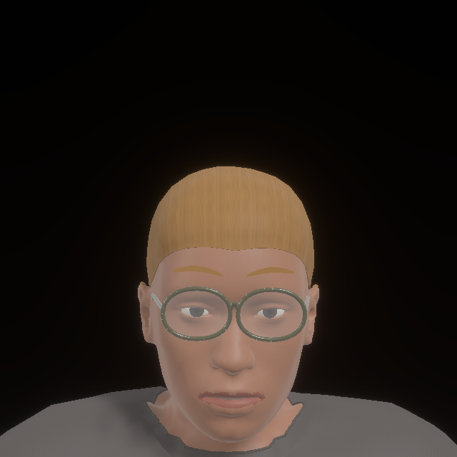
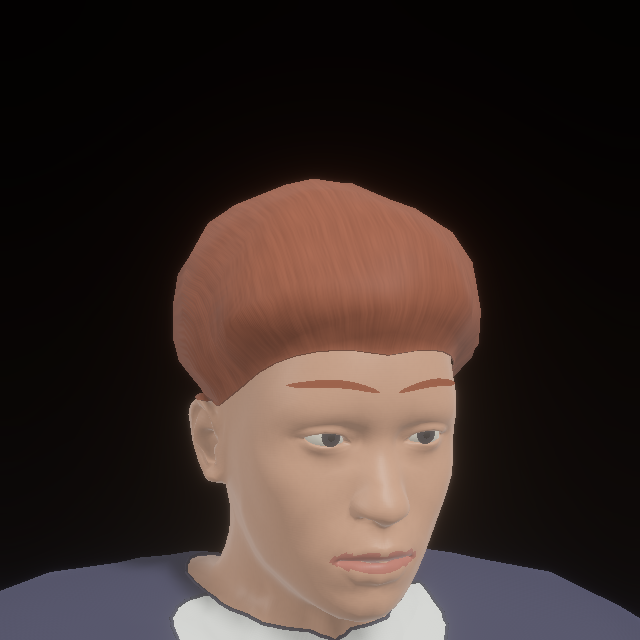
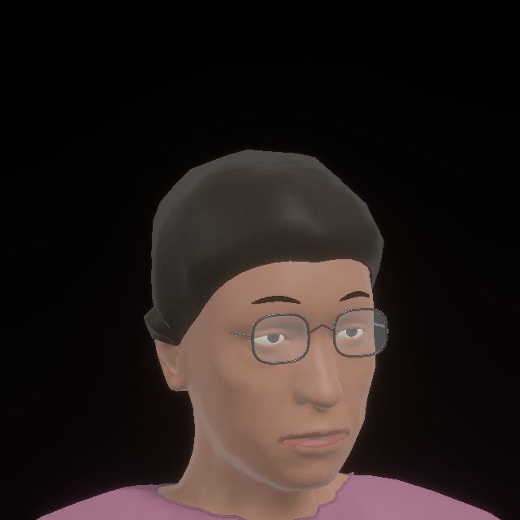
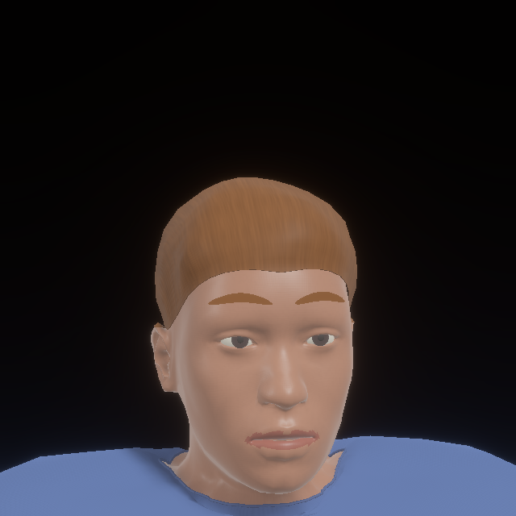
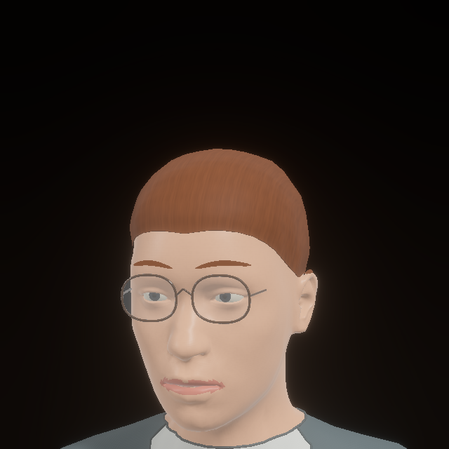
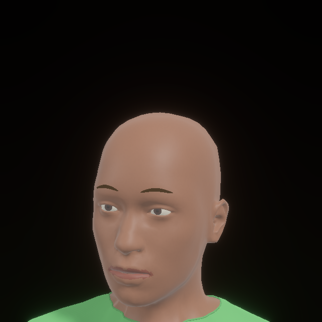
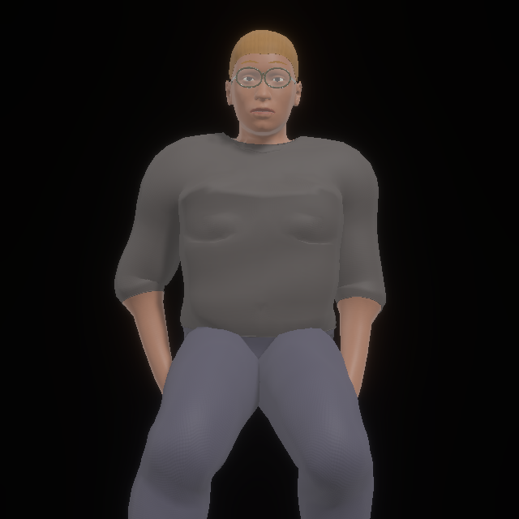
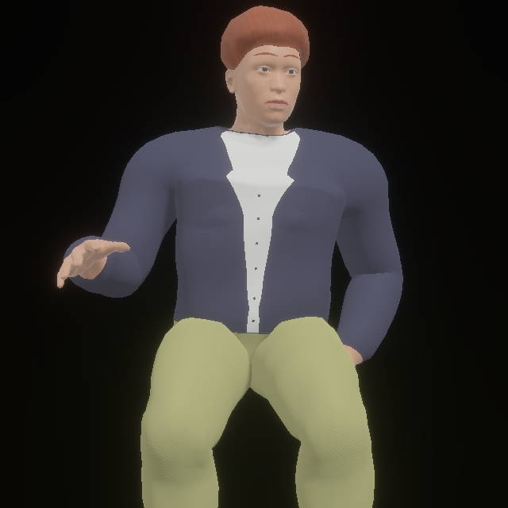
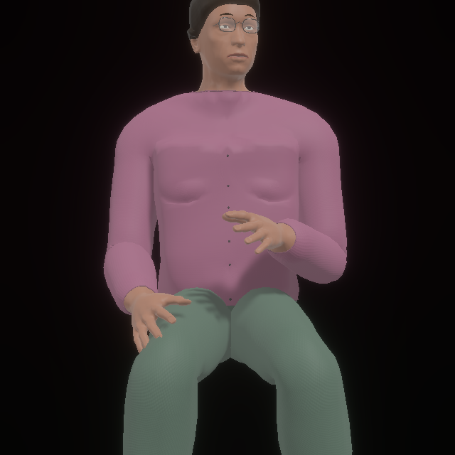
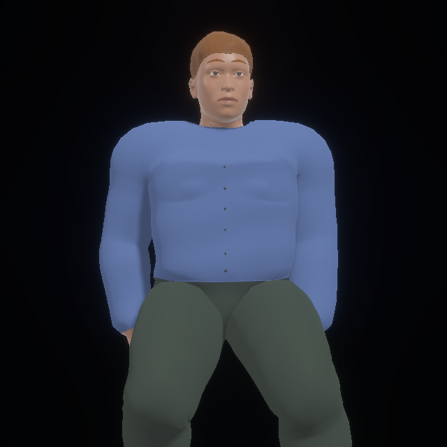
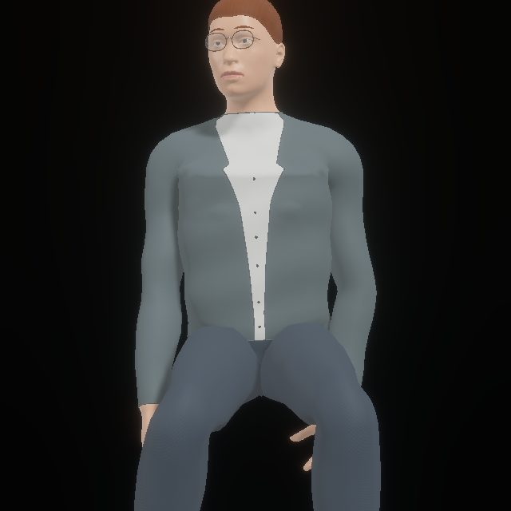
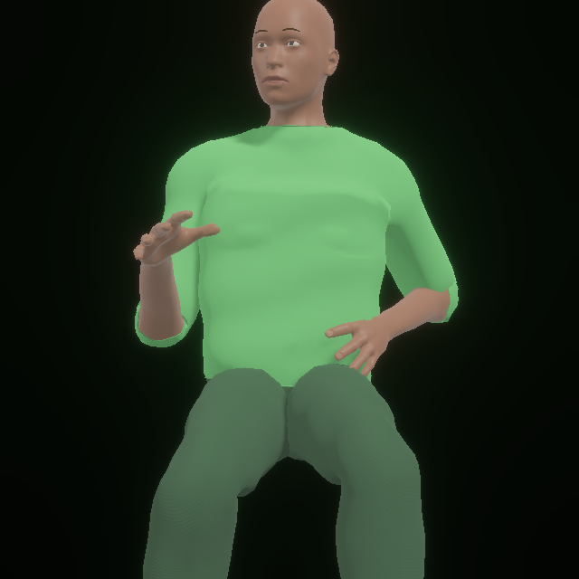
Six Anny phenotypes, fitted clothes, opaque scalp volumes, surface-fitted eyebrows and eyewear. Fixed studio lighting. These captures verify geometry and surface changes; they do not establish photographic realism.
64-room planning audit: 347/398 people received feasible plans. Real ARDY captures: 14/17 admitted, 3 retained static after overlapping body bounds. 40 annotated views; see machine-readable metrics and rejection reasons.











